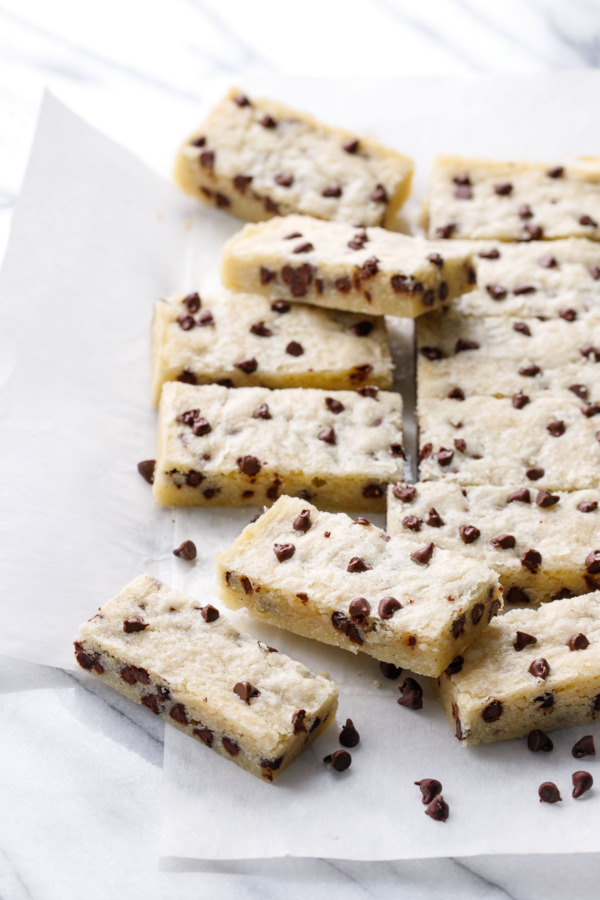

Chocolate Chip Shortbread Cookies

Description
Tender, buttery shortbread with a hint of almond and studded with mini chocolate chips. This recipe is
ridiculously easy to prepare, making it a perfect recipe for stress-free entertaining!
Ingredients
- 1/2 cup (1 stick) unsalted butter, room temperature
- 3/4 cup granulated sugar
- 1 large egg
- 1 teaspoon pure vanilla extract or vanilla bean paste
- 1/4 teaspoon almond extract
- 1/2 teaspoon kosher salt
- 1 1/2 cups (6.75 oz) all-purpose flour
- 1/2 cup mini semisweet chocolate chips, plus more for topping
Steps
- Preheat oven to 350 degrees F. Line an 8-by-8-inch baking pan with parchment paper (see: lining a square pan with parchment), leaving an overhang/handle on at least two edges.
- In a large mixing bowl or the bowl of stand mixer, beat butter and sugar together until light and fluffy. Beat in egg, followed by almond and vanilla extracts and salt, scraping down the sides of the bowl as needed. Add flour and mix on low speed until mostly incorporated, then add chocolate chips and mix until evenly distributed.
- Press dough into prepared baking pan in an even layer. The dough is quite sticky, so it might help to lightly flour your fingertips so they don’t stick to the dough; you can also use a piece of plastic wrap to help you press the dough into an even layer in the bottom of the pan.
- Bake for 28 to 30 minutes or until top is puffed and matte in finish and the edges are just starting to turn a very light golden brown. Remove from oven and place on a wire rack to cool completely.
- Lift out entire block of shortbread using the parchment paper as handles. Cut into 3×3 squares, then cut each square in half to make perfect dunkable sticks. Cookies will keep in an airtight container at room temperature for up to a week, or freeze for longer storage.